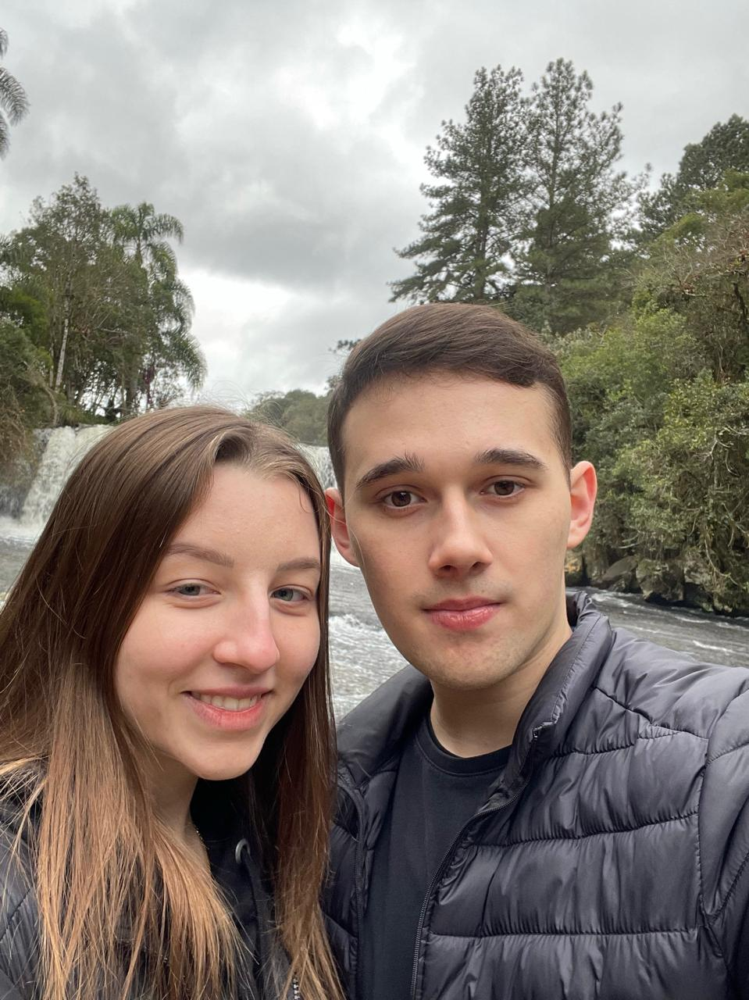
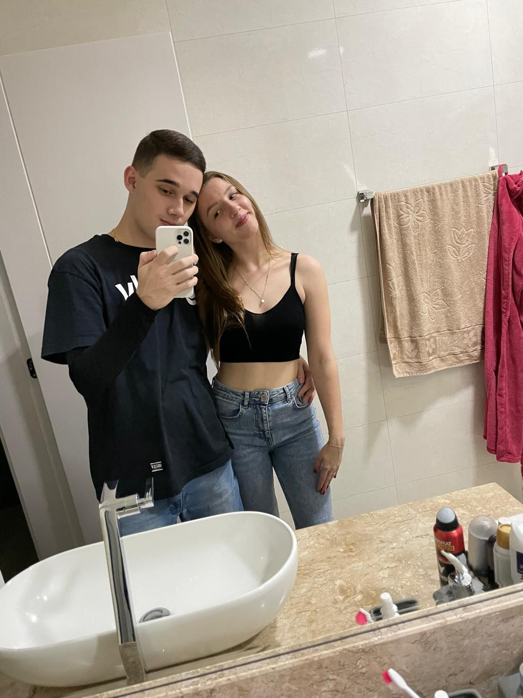
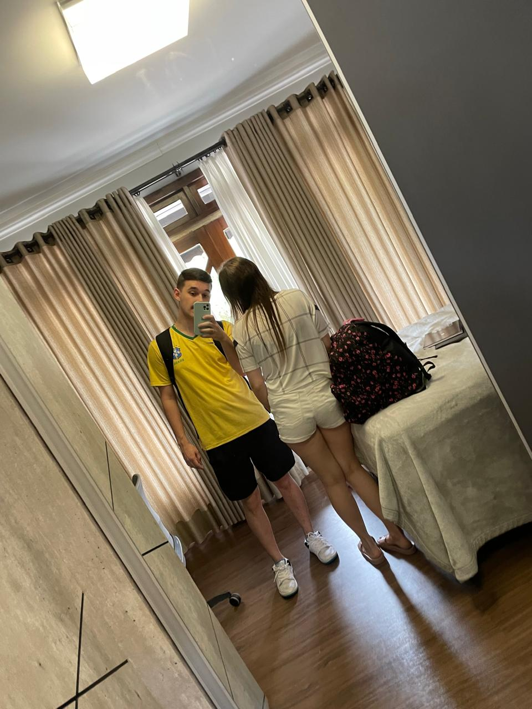
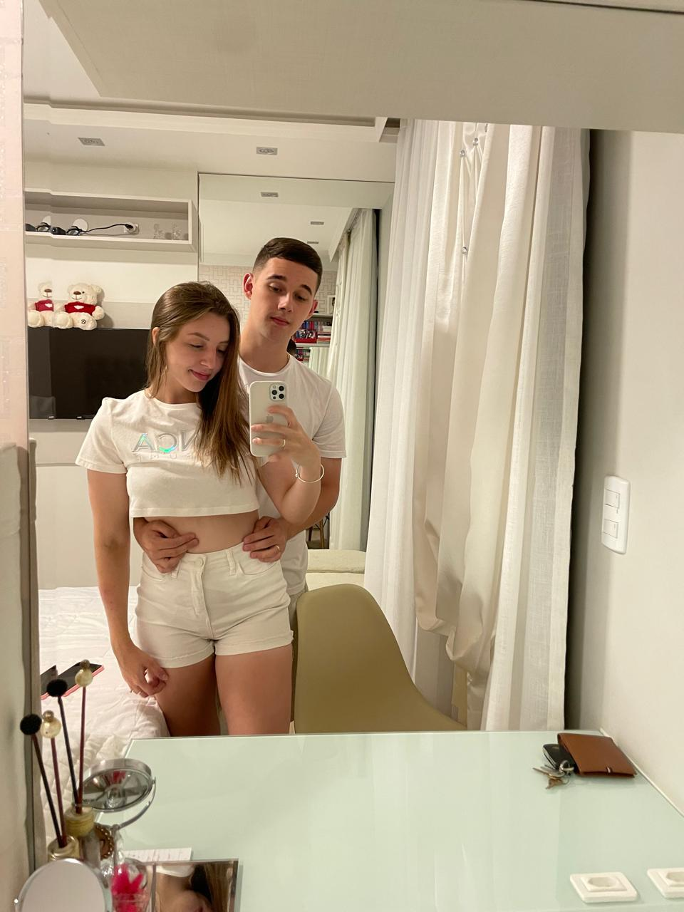
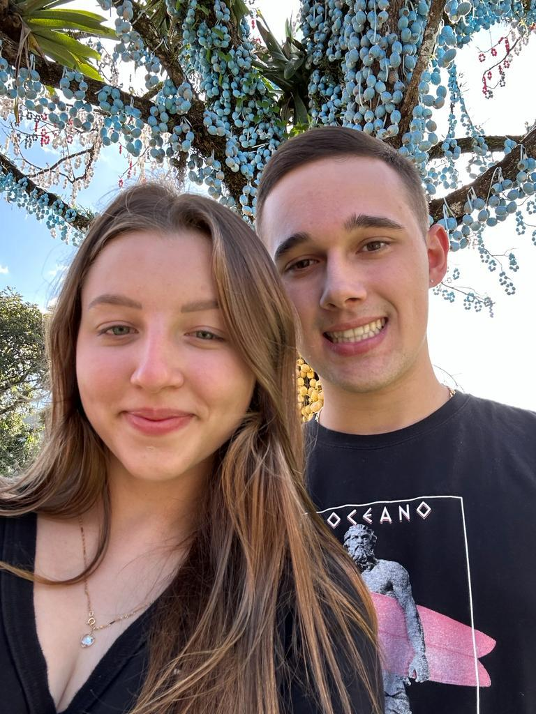
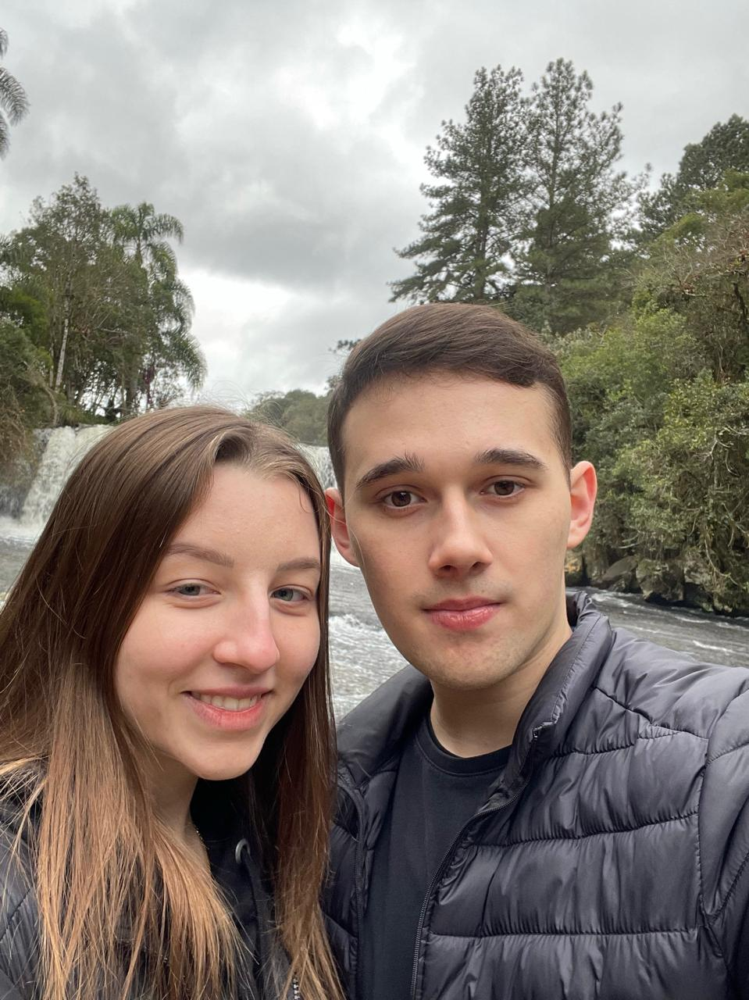
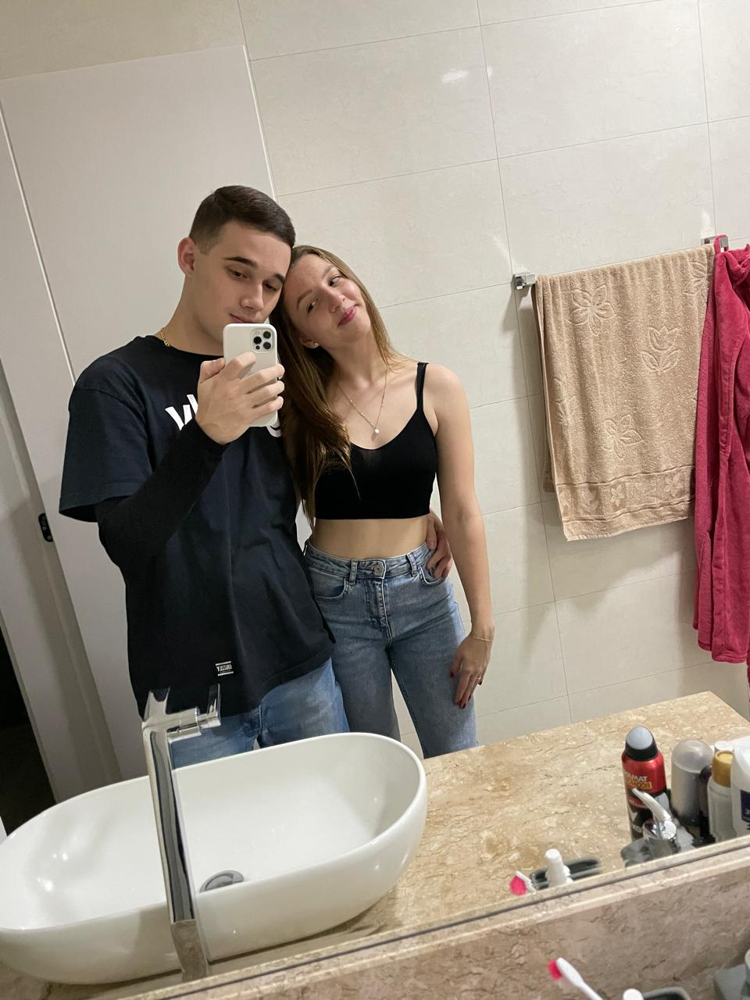
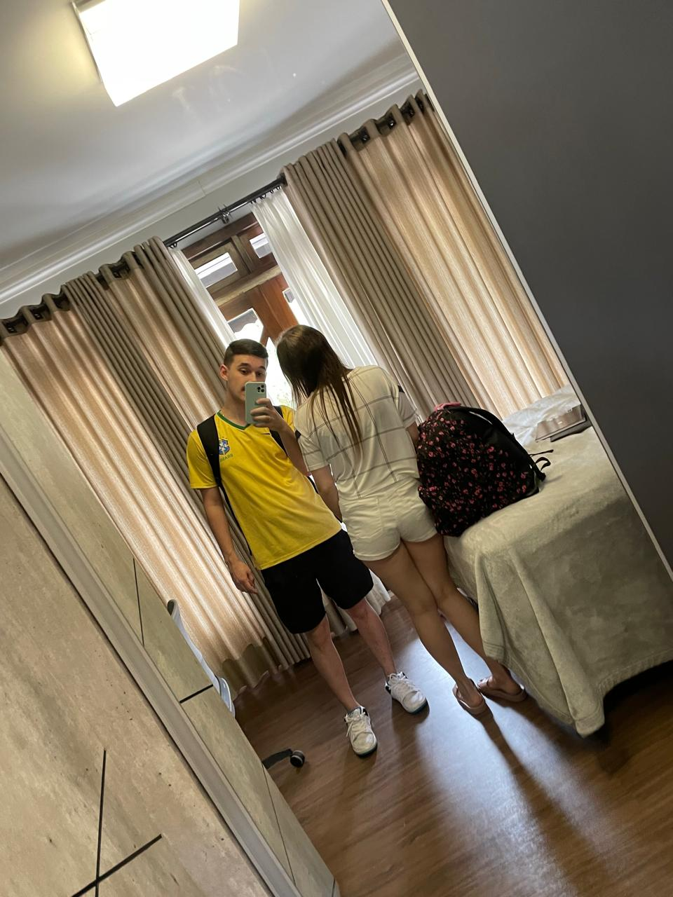
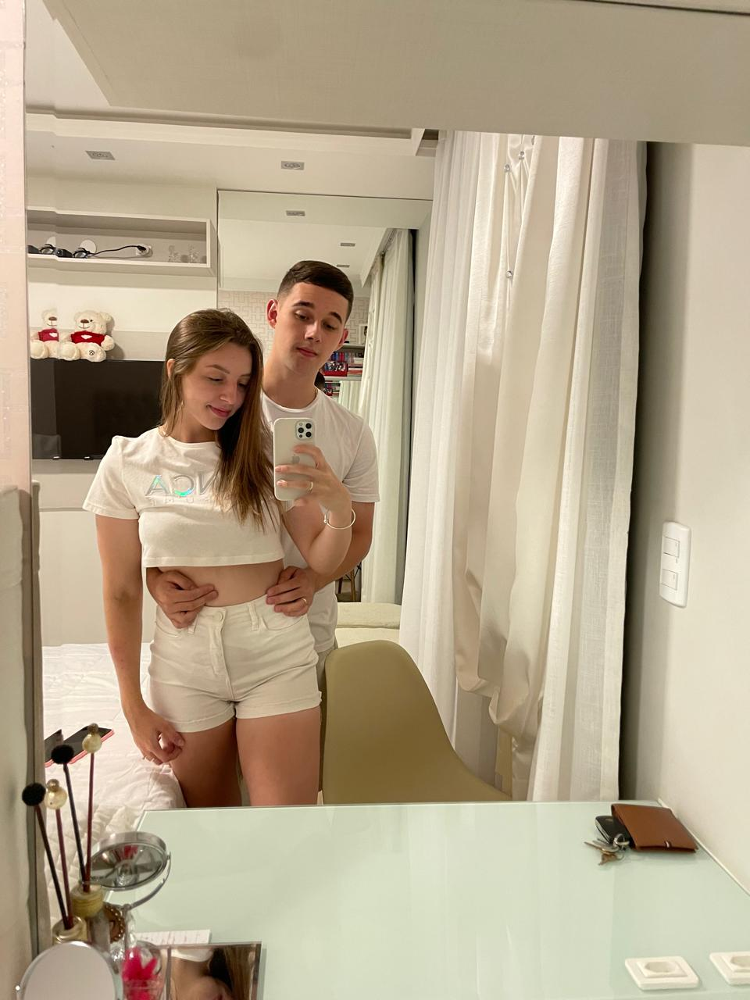
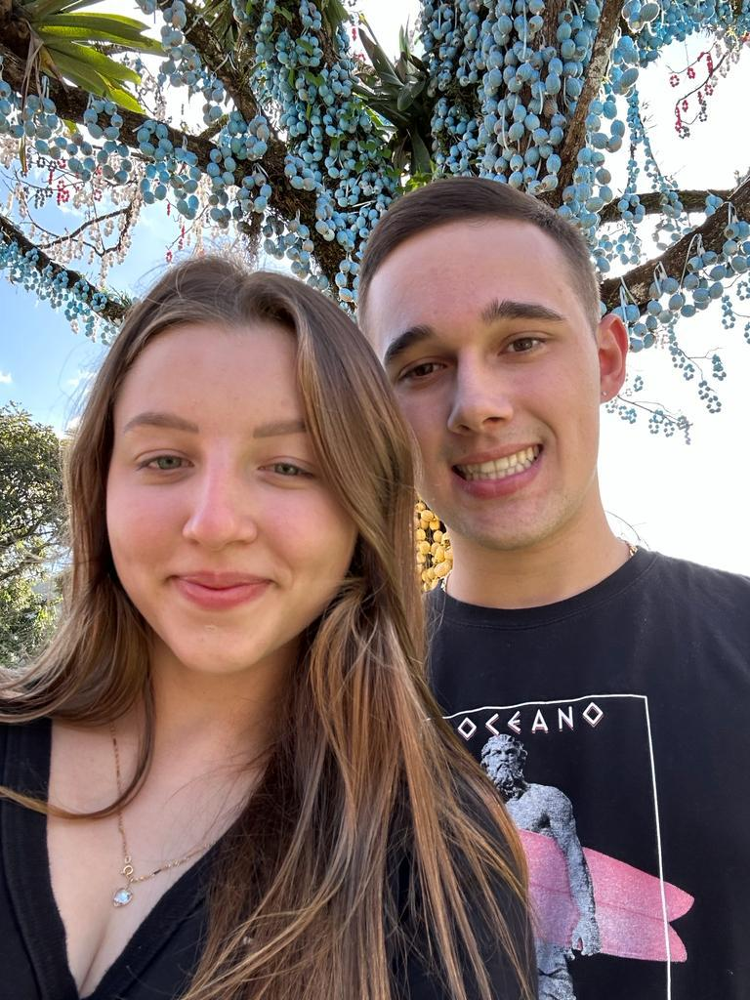

Leia-me Quando Quiser Sentir Nostalgia
Uma viagem pelos nossos momentos mais especiais...
Nosso Primeiro Encontro
Naquele dia, fomos tomar açaí, e essas são as primeiras fotos que temos juntos. Eu estava tão nervoso, contando os minutos pra te encontrar. Quando te vi, meu coração disparou ainda mais — você estava tão linda, com aquele sorriso que me desarmou. Foi ali que eu soube que minha vida nunca mais seria a mesma, porque você trouxe uma felicidade que eu nem sabia que existia. Te amo, minha Kaillany, desde aquele primeiro açaí até cada momento que vivemos depois.
 









E Muita Coisa Se Passou Depois Disso
Desde aquele açaí, minha Kaillany, vivemos tantas aventuras juntos. Cada risada, cada abraço, cada sonho compartilhado construiu nossa história. Foram viagens, momentos simples no sofá, olhares que diziam tudo sem palavras. Essas fotos capturam pedaços do nosso amor, dos dias que nos fizeram mais fortes e mais nós. Você é minha casa, meu sorriso, e cada lembrança contigo é um tesouro que guardo no coração. Espera só, são várias fotos pra te fazer sorrir!
Hoje e Sempre
Cada dia com você é uma nova página do nosso livro. Mal posso esperar para escrever o resto da nossa história juntos.
Te amo, hoje e sempre. Que essas memórias te tragam um sorriso sempre que sentir saudades.